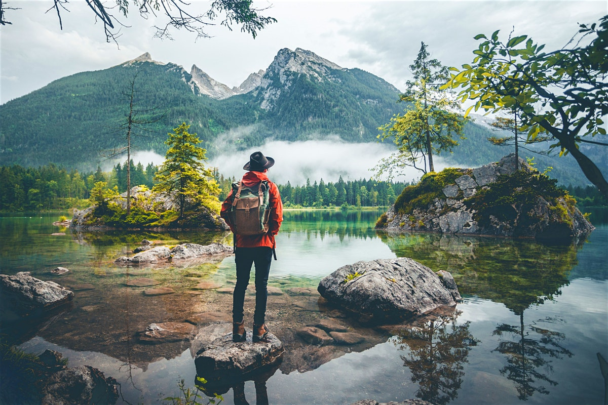

Experience the beauty of world

Discover the wonders
Uncover the charm of Destination
Explore beautiful destinations around the world
Traveling is an enriching experience that opens up a world of discovery and adventure. It allows individuals to break free from their daily routines and immerse themselves in new cultures, landscapes, and perspectives. Whether exploring bustling city streets, relaxing on serene beaches, or venturing into rugged mountains, traveling offers opportunities for personal growth and learning. Each journey brings a chance to meet new people, taste diverse cuisines, and witness the beauty of our planet. Beyond the thrill of exploration, traveling fosters a deeper appreciation for the world's diversity and can lead to lifelong memories and connections.
Experience the beauty of world
Discover the wonders
Uncover the charm of Destination